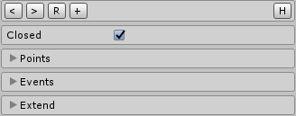
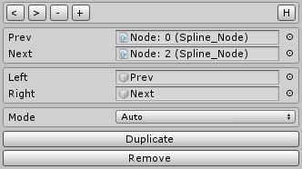

Table of Contents
Create
This reference page is a concrete documentation (for the spline) of the general behavior you can find in any line within the framework. Combine reading this page with the frame documentation for a detailed understanding.
In order to create a new Spline go to the unity toolbar and select Spline. If it is the first time using the plugin click on Load and refresh the unity editor; A new game object will be created with their correspondent scripts.
Unity SLines Toolbar -> Load (if first time) -> S-Lines/Spline.
Spline Frame
This is the main component for editing and extending the spline. In order to edit the spline click on its correspondent nodes and drag them wherever you need them to be, this way you can create any path you want. To make it easier for editing, the only way to add new nodes, is to duplicate the selected one, click the button inside its editor (each node is a different gameObject).
Architecture
It is interesting to know that each nod is contained in a different gameObject. They are connected in a linked list structure for fast iteration and easy CRUD {Create, Read, Update, Delete} operations. This spline architecture allows to create simple script extensions. For example a single node could be moved at runtime in a wavy oscillation movement (a script is needed to achieve this behavior).
Editing
On the scene view the spline is renderer with a thin curve line and the nodes are represented as white dots. You can select the nodes:
- directly in the spline
- in the spline_frame inspector
- by opening the gameObject that contains the node
Use the regular unity transform tool to drag the nodes anywhere you need them.
Toolbar
The Toolbar at the top of the component includes some of the basic editing options.
| Button | Action |
|---|---|
| < | Select the first node |
| > | Select the last node |
| R | Reset the spline |
| + | Duplicate the last node |
Closed
The spline can be either open or closed. Many times closed path are needed, and when this is the case, the rest of the components that depend directly on the spline shape will be notified in their behavior.
Node List
The inspector allows the view of all of the child nodes that conform the spline. Any of them can be selected from here and the current GameObject selection will be modified.
Events
There are a few interesting events we might want to interact with such as when the shape of the spline is changed. The tool supports the unity event property and allows a easy integration with the user scripts.
Extensions
Within the Spline_Frame component you can create new behavior for the line, such as drawers or traversals. Check the Line Frame documentation for more detail about the extension components
Spline Node
You can modify each individual node of the spline. There are a few interesting options in each of them.
Toolbar
The Toolbar at the top of the component includes some of the basic editing options. Along with the node selection tools creates a nice user experience.
| Button | Action |
|---|---|
| < | Select the previous node |
| > | Select the next node |
| - | Removes the current node |
| + | Duplicate the current node |
Mode
By changing the node mode many different styles of spline can be achieved. Create any shape needed:
| Mode | Behavior |
|---|---|
| Free | Leaf nodes can be drag anywhere |
| Aligned | Leaf nodes are enforced by their tangents |
| Mirrored | Leaf nodes are enforced by tangents and same distance to center |
| Auto | Leaf nodes are placed automatically and cannot be drag along |
| Poly | Leaf nodes disappear to make polygonal lines |
Use the {Duplicate} button to duplicate the current node, its the only way of extending the spline, and the most comfortable one.
Use the {Remove} button to remove the current node, don't delete the gameObject directly: it can cause problems;

As it is said at the beginning of the page, to have a full understating of how the line works check the frame documentation since this line a concrete specification.